Support Vector Machines (SVM)
01. Geometric Intuition
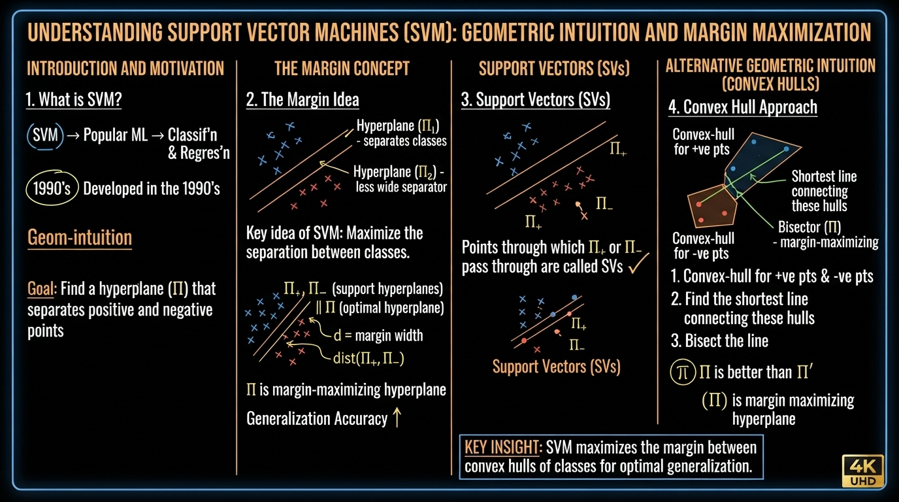
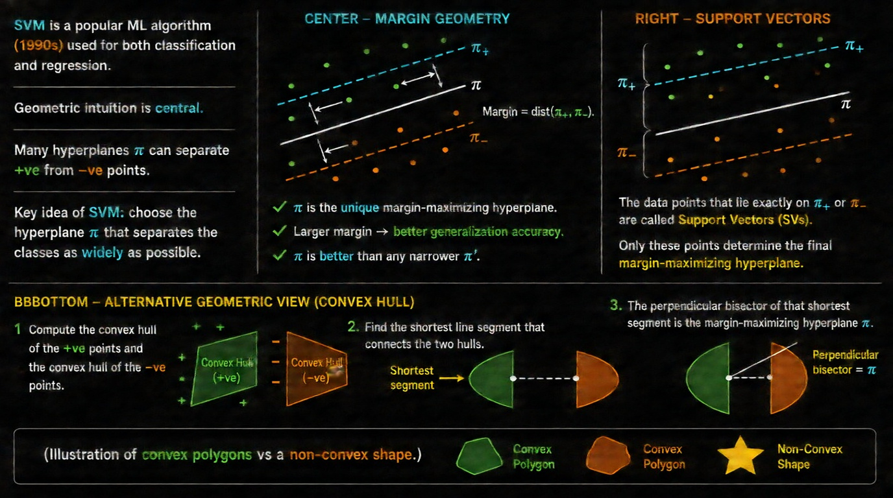
Support Vector Machines (SVM)
SVM is a popular Machine Learning algorithm used for both classification and regression.
It became popular in the 1990s.
We will first develop the geometric intuition.
Geometric Intuition
There are many hyperplanes $\pi$ that can separate the positive points from the negative points.
Key idea of SVM:
Find the hyperplane $\pi$ that separates the positive points from the negative points as widely as possible.
(The probabilistic view $P(y_i=1)=\sigma(\mathbf{w}^\top\mathbf{x}_i)$ is the Logistic Regression view; SVM has a different geometric motivation.)
Margin
Draw two parallel hyperplanes $\pi_+$ and $\pi_-$ that just touch the positive and negative points respectively:
- $\pi_+$ is parallel to $\pi$
- $\pi_-$ is parallel to $\pi$
- $\pi_+$ and $\pi_-$ are also parallel to each other
The distance between $\pi_+$ and $\pi_-$ is called the margin:
$$ d = \text{margin} = \operatorname{dist}(\pi_+,\pi_-) $$
$\pi$ is the margin-maximising hyperplane.
$\pi$ is better than any other separating hyperplane $\pi'$.
Goal of SVM
SVM tries to find a hyperplane $\pi$ that maximises the margin
$$ \text{margin} = \operatorname{dist}(\pi_+,\pi_-) $$
Larger margin $\Rightarrow$ better generalisation accuracy.
Support Vectors (SV)
The points through which $\pi_+$ or $\pi_-$ pass are called Support Vectors.
These are the only points that influence the position of the margin-maximising hyperplane.
Alternative Geometric Intuition of SVM (Convex Hull View)
- Compute the convex hull of the positive points and the convex hull of the negative points.
- Find the shortest line connecting these two hulls.
- The hyperplane $\pi$ that bisects this shortest line is the margin-maximising hyperplane.
(A convex hull is the smallest convex polygon that contains all the points of a class. A non-convex shape is not a convex hull.)
02. Mathematical Derivation
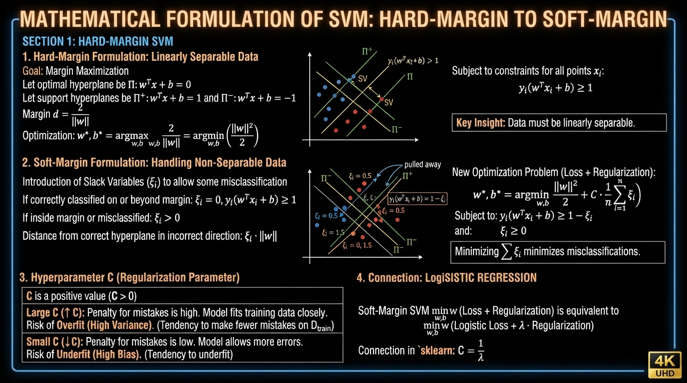
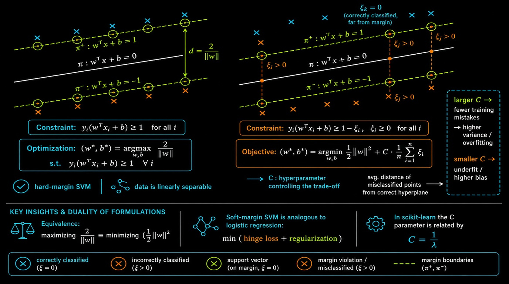
Mathematical Formulation of SVM
Hard-Margin SVM (Linearly Separable Case)
Let the hyperplane be
$$ \pi:\ \mathbf{w}^\top\mathbf{x}+b=0 $$
The two parallel supporting hyperplanes are
$$ \begin{align*} \pi^+&:\ \mathbf{w}^\top\mathbf{x}+b=1 \ \pi^-&:\ \mathbf{w}^\top\mathbf{x}+b=-1 \end{align*} $$
The margin (distance between $\pi^+$ and $\pi^-$) is
$$ d=\frac{2}{|\mathbf{w}|} $$
Optimization problem
$$ (\mathbf{w}^,b^)=\arg\max_{\mathbf{w},b}\ \frac{2}{|\mathbf{w}|} \quad\text{subject to}\quad y_i(\mathbf{w}^\top\mathbf{x}_i+b)\ge 1\quad\text{for all }i $$
This is a constrained optimization problem with $n$ constraints.
It is called Hard-Margin SVM and assumes the data is linearly separable.
Soft-Margin SVM (Non-linearly Separable / Almost Linearly Separable)
When the data is not linearly separable we introduce slack variables $\xi_i\ge 0$.
- $\xi_i=0$ → point is correctly classified and lies on the correct side of $\pi^+$ or $\pi^-$
- $\xi_i>0$ → point is on the wrong side; $\xi_i$ measures how far (in functional distance) the point is from the correct hyperplane
The constraint becomes
$$ y_i(\mathbf{w}^\top\mathbf{x}_i+b)\ge 1-\xi_i,\qquad\xi_i\ge 0 $$
Turning Max into Min
$$ \arg\max_{\mathbf{w},b}\frac{2}{|\mathbf{w}|} =\arg\min_{\mathbf{w},b}\frac{|\mathbf{w}|}{2} $$
(because maximising $f$ is the same as minimising $1/f$).
Soft-Margin Optimization Problem
$$ (\mathbf{w}^,b^) =\arg\min_{\mathbf{w},b} \frac{|\mathbf{w}|}{2} +C\cdot\frac{1}{n}\sum_{i=1}^{n}\xi_i $$
subject to
$$ y_i(\mathbf{w}^\top\mathbf{x}_i+b)\ge 1-\xi_i,\qquad\xi_i\ge 0\quad\forall i $$
- $\dfrac{|\mathbf{w}|}{2}$ → maximises the margin (regularisation term)
- $\dfrac{1}{n}\sum\xi_i$ → average distance of misclassified points from the correct hyperplanes (hinge-loss term)
- $C>0$ is a hyper-parameter that controls the trade-off
This is Soft-Margin SVM.
It can also be written in the familiar regularised form
$$ \min_{\mathbf{w},b}\quad \underbrace{C\cdot\text{hinge-loss}}{\text{loss}} +\underbrace{\frac{|\mathbf{w}|}{2}}{\text{regularisation}} $$
which is analogous to Logistic Regression:
$$ \min_{\mathbf{w}}\quad\text{logistic-loss}+\lambda\cdot\text{regularisation} $$
Effect of the Hyper-parameter $C$
- $C\uparrow$ → tendency to make fewer mistakes on the training data → overfitting (high variance)
- $C\downarrow$ → more mistakes allowed → underfitting (high bias)
In sklearn the relationship with the usual regularisation strength is
$$ C=\frac{1}{\lambda} $$
03. Why We Take Values +1 and -1 for Support Vector Planes
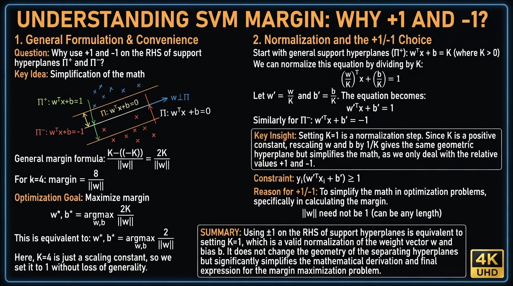
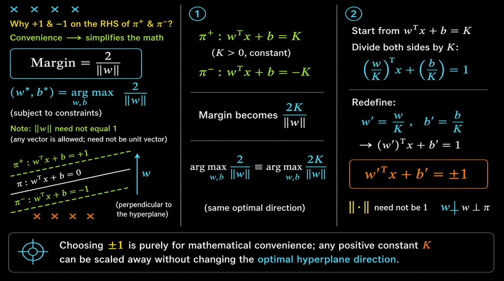
Why +1 and –1 on the RHS of $\pi^+$ and $\pi^-$?
Question
Why do we write
$$ \begin{align*} \pi^+&:\ \mathbf{w}^\top\mathbf{x}+b=+1 \ \pi^-&:\ \mathbf{w}^\top\mathbf{x}+b=-1 \end{align*} $$
instead of some other constants?
Convenience / Scaling Argument
The margin is
$$ d=\frac{2}{|\mathbf{w}|} $$
and the optimisation problem is
$$ (\mathbf{w}^,b^)=\arg\max_{\mathbf{w},b}\frac{2}{|\mathbf{w}|} $$
Important observation
- $\mathbf{w}$ need not be a unit vector.
- $|\mathbf{w}|$ can be any positive number.
General Case
Suppose we write the supporting hyperplanes with an arbitrary positive constant $K$:
$$ \begin{align*} \pi^+&:\ \mathbf{w}^\top\mathbf{x}+b=K \ \pi^-&:\ \mathbf{w}^\top\mathbf{x}+b=-K \end{align*} \quad(K>0) $$
Then the margin becomes
$$ d=\frac{2K}{|\mathbf{w}|} $$
and the optimisation problem is
$$ \arg\max_{\mathbf{w},b}\frac{2K}{|\mathbf{w}|} $$
Rescaling
We can always rescale the variables:
$$ \mathbf{w}'=\frac{\mathbf{w}}{K},\qquad b'=\frac{b}{K} $$
Then
$$ \pi^+!:\ (\mathbf{w}')^\top\mathbf{x}+b'=1 $$
and the problem reduces exactly to the standard form
$$ \arg\max\frac{2}{|\mathbf{w}'|} $$
Conclusion
Choosing the constants $+1$ and $-1$ is purely a convenience.
It simplifies the mathematics without changing the geometry of the solution (the direction of $\mathbf{w}$ and the location of the hyperplane stay the same).
04. Loss Function (Hinge Loss) Based Interpretation
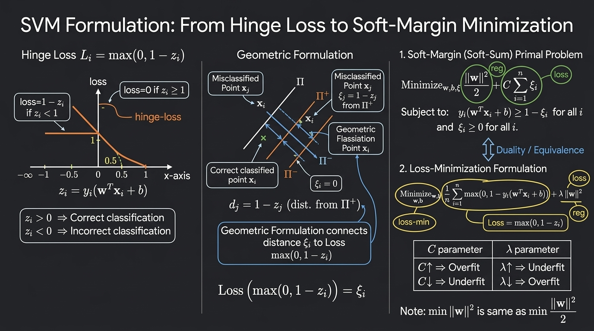
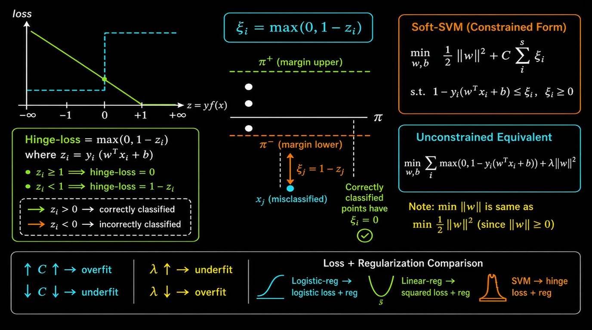
Loss-Minimization View: Hinge-Loss
Comparison of Loss Functions
- Logistic Regression → logistic-loss + regularisation
- Linear Regression → squared-loss + regularisation
- SVM → hinge-loss + regularisation
Define the signed quantity
$$ z_i = y_i,f(\mathbf{x}_i) = y_i(\mathbf{w}^\top\mathbf{x}_i + b) $$
- $z_i > 0$ → $\mathbf{x}_i$ is correctly classified
- $z_i < 0$ → $\mathbf{x}_i$ is incorrectly classified
Definition of Hinge-Loss
$$ \text{hinge-loss} = \begin{cases} 0 & \text{if } z_i \ge 1 \ 1 - z_i & \text{if } z_i < 1 \end{cases} = \max\bigl(0,\ 1 - z_i\bigr) $$
- Case 1: $z_i \ge 1$ → $1-z_i$ is negative → $\max(0,1-z_i)=0$
- Case 2: $z_i < 1$ → $1-z_i > 0$ → $\max(0,1-z_i)=1-z_i$
Geometric Formulation ↔ Loss-Minimization
For a correctly classified point we have $\xi_i = 0$.
For a point $\mathbf{x}_j$ that lies on the wrong side of $\pi^+$ (or $\pi^-$):
$$ d_j = 1 - y_j(\mathbf{w}^\top\mathbf{x}_j + b) = 1 - z_j $$
$\xi_j$ is exactly the distance of $\mathbf{x}_j$ from the correct supporting hyperplane:
$$ \xi_j = 1 - z_j \qquad\text{(when the point is misclassified)} $$
Therefore
$$ \max(0,\ 1-z_i) = \xi_i $$
Soft-Margin SVM (Loss-Minimization Form)
$$ \min_{\mathbf{w},b}
\frac{|\mathbf{w}|}{2}
- C\sum_{i=1}^{n}\xi_i $$
subject to
$$ 1 - y_i(\mathbf{w}^\top\mathbf{x}_i + b) \le \xi_i,\qquad \xi_i \ge 0 $$
Equivalently (unconstrained form)
$$ \min_{\mathbf{w},b}
\sum_{i=1}^{n}\max\bigl(0,\ 1 - y_i(\mathbf{w}^\top\mathbf{x}_i + b)\bigr)
- \lambda|\mathbf{w}|^2 $$
(Note: minimising $|\mathbf{w}|$ is the same as minimising $|\mathbf{w}|^2$ because $|\mathbf{w}|\ge 0$.)
Effect of the Hyper-parameter
- $C\uparrow$ → overfitting
- $C\downarrow$ → underfitting
(or equivalently $\lambda\uparrow$ → underfitting, $\lambda\downarrow$ → overfitting)
05. Dual Form of SVM Formulation
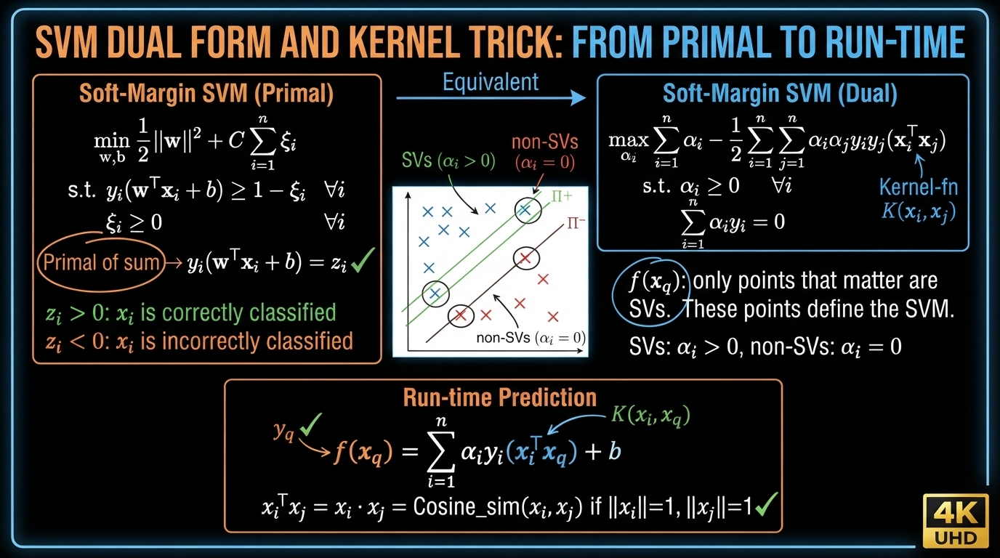
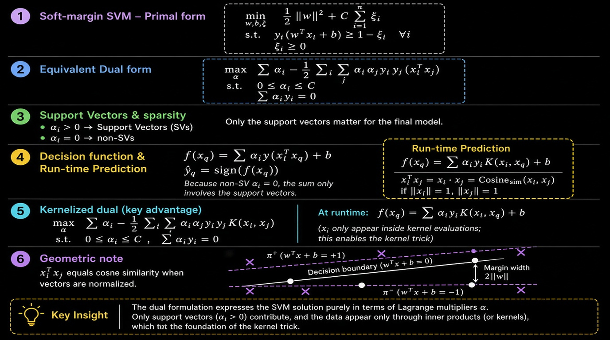
Dual Form of SVM
Primal (Soft-Margin SVM)
$$ \begin{align*} \min_{\mathbf{w},b}\quad &\frac12|\mathbf{w}| + C\sum_{i=1}^{n}\xi_i \ \text{s.t.}\quad &y_i(\mathbf{w}^\top\mathbf{x}_i + b)\ge 1-\xi_i,\qquad\xi_i\ge 0\quad\forall i \end{align*} $$
This is the primal formulation of SVM.
Dual Formulation (Equivalent)
$$ \begin{align*} \max_{\alpha_i}\quad &\sum_{i=1}^{n}\alpha_i -\frac12\sum_{i=1}^{n}\sum_{j=1}^{n} \alpha_i\alpha_j y_i y_j,(\mathbf{x}_i^\top\mathbf{x}j) \ \text{s.t.}\quad &\alpha_i\ge 0,\qquad \sum{i=1}^{n}\alpha_i y_i = 0 \end{align*} $$
Important Observations from the Dual
- Each training point $\mathbf{x}_i$ gets a dual variable $\alpha_i$.
- The data points $\mathbf{x}_i$ appear only in the form of inner products $\mathbf{x}_i^\top\mathbf{x}_j$.
- The decision function becomes
$$ f(\mathbf{x}q) = \sum{i=1}^{n}\alpha_i y_i,(\mathbf{x}_i^\top\mathbf{x}_q) + b $$
- $\alpha_i > 0$ → $\mathbf{x}_i$ is a Support Vector
- $\alpha_i = 0$ → $\mathbf{x}_i$ is a non-Support Vector
Only the Support Vectors matter for the final classifier.
Kernel Trick
Because the dual depends on the data only through inner products, we can replace
$$ \mathbf{x}_i^\top\mathbf{x}_j \quad\text{by a kernel}\quad K(\mathbf{x}_i,\mathbf{x}_j) $$
$$ \max_{\alpha_i} \sum_{i=1}^{n}\alpha_i -\frac12\sum_{i=1}^{n}\sum_{j=1}^{n} \alpha_i\alpha_j y_i y_j,K(\mathbf{x}_i,\mathbf{x}_j) $$
subject to the same constraints.
$K(\mathbf{x}_i,\mathbf{x}_j)$ is any valid similarity / kernel function (e.g. cosine similarity when the vectors are normalised).
Runtime Prediction
At test time we only need
$$ f(\mathbf{x}q) = \sum{i=1}^{n}\alpha_i y_i,K(\mathbf{x}_i,\mathbf{x}_q) + b $$
(Only terms with $\alpha_i > 0$ survive.)
06. Kernel Trick
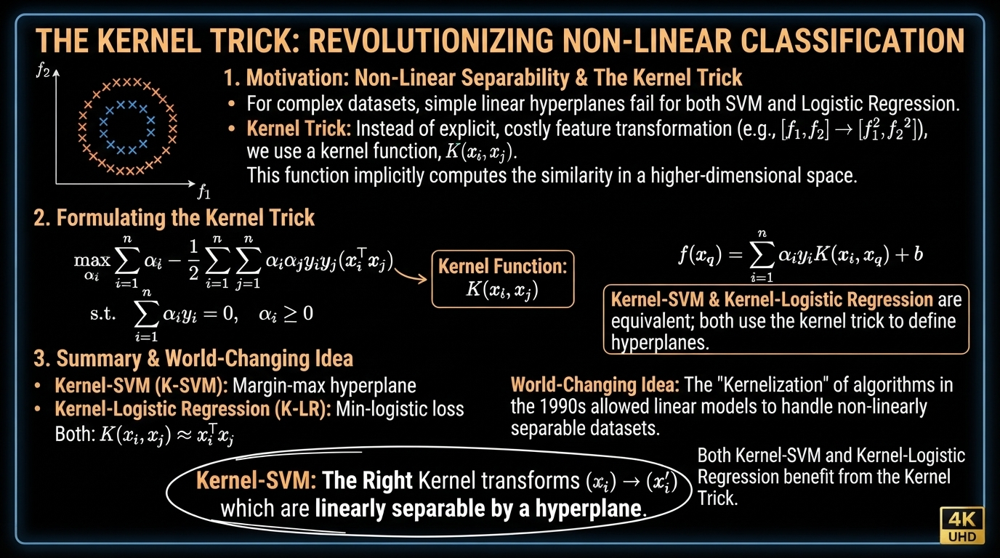
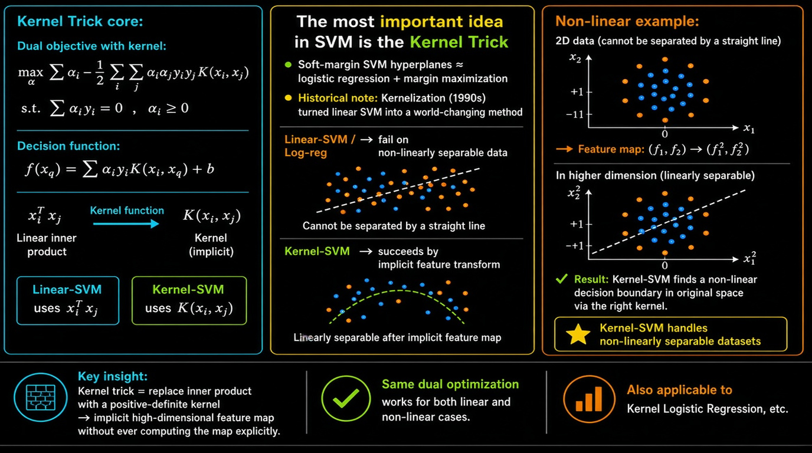
Kernel Trick
From Linear SVM to Kernel SVM
The dual of Linear SVM is
$$ \begin{align*} \max_{\alpha_i}\quad &\sum_{i=1}^{n}\alpha_i -\frac12\sum_{i=1}^{n}\sum_{j=1}^{n} \alpha_i\alpha_j y_i y_j,(\mathbf{x}_i^\top\mathbf{x}j) \ \text{s.t.}\quad &\sum{i=1}^{n}\alpha_i y_i=0,\qquad\alpha_i\ge 0 \end{align*} $$
The only place the data appears is the inner product $\mathbf{x}_i^\top\mathbf{x}_j$, which can be viewed as a similarity $\operatorname{Sim}(\mathbf{x}_i,\mathbf{x}_j)$.
We simply replace it by a kernel function:
$$ \mathbf{x}_i^\top\mathbf{x}_j \quad\longrightarrow\quad K(\mathbf{x}_i,\mathbf{x}_j) $$
and obtain Kernel SVM:
$$ f(\mathbf{x}q) = \sum{i=1}^{n}\alpha_i y_i,K(\mathbf{x}_i,\mathbf{x}_q)+b $$
Why the Kernel Trick is Important
- Soft-margin Linear SVM (hyperplanes) ≈ Logistic Regression (both try to find a good linear separator; SVM additionally maximises the margin).
- The most important idea in SVM is the kernel trick.
$$ \begin{align*} \text{Linear SVM:}&\quad K(\mathbf{x}_i,\mathbf{x}_j)=\mathbf{x}_i^\top\mathbf{x}_j \ \text{Kernel SVM:}&\quad K(\mathbf{x}_i,\mathbf{x}_j)=\text{any valid kernel} \end{align*} $$
Handling Non-Linearly Separable Data
When the data is not linearly separable in the original space:
- Linear SVM fails
- Logistic Regression fails
Two successful approaches:
- Explicit feature transform (e.g. $(f_1,f_2)\to(f_1^2,f_2^2)$) + Logistic Regression / Linear SVM
- Kernel SVM – chooses the right kernel so that the data becomes linearly separable in a higher-dimensional feature space (without ever computing the explicit mapping).
Kernel SVM is therefore the natural way to handle non-linearly separable data sets.
World-Changing Idea
Kernelization (1990s) – the idea of replacing inner products by kernels – turned Linear SVM into a powerful non-linear classifier and later inspired Kernel Logistic Regression as well:
$$ \mathbf{x}_i^\top\mathbf{x}_j \quad\longrightarrow\quad K(\mathbf{x}_i,\mathbf{x}_j) $$
07. Polynomial Kernel
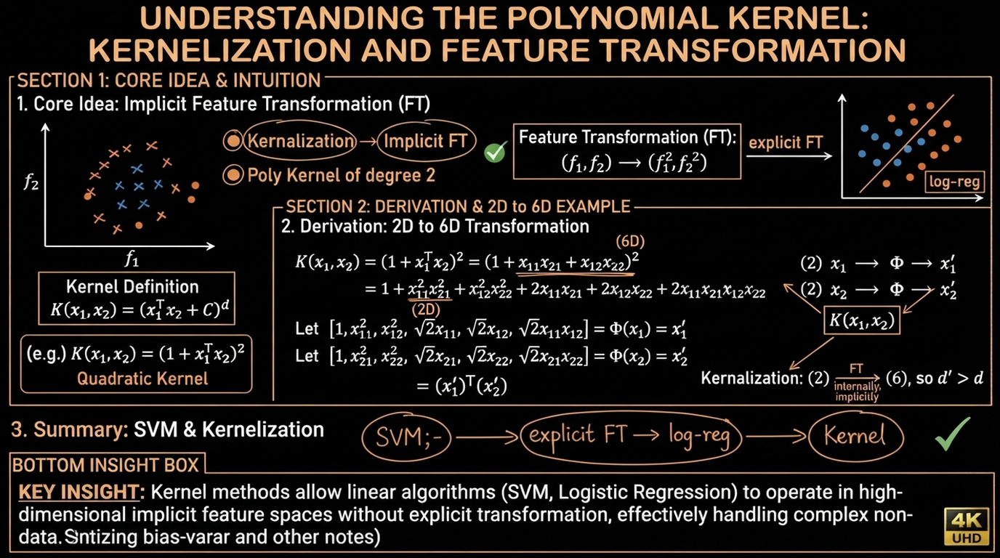
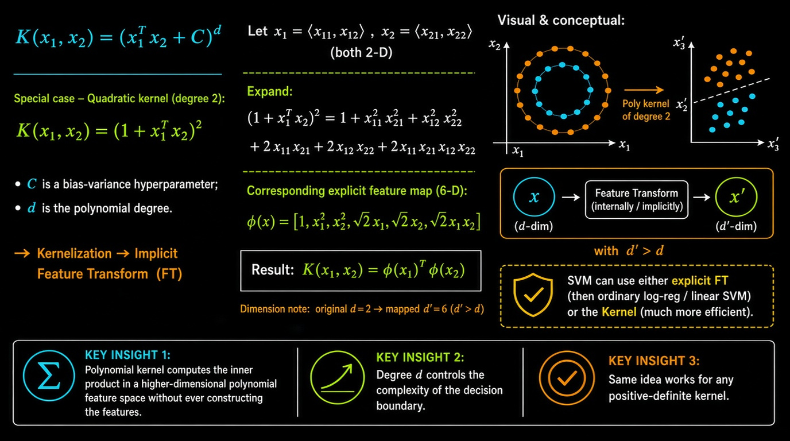
Polynomial Kernel
Kernelization = Implicit Feature Transform
Kernelization performs an implicit feature transform.
The polynomial kernel of degree $d$ is
$$ K(\mathbf{x}_1,\mathbf{x}_2) = \bigl(\mathbf{x}_1^\top\mathbf{x}_2 + C\bigr)^d $$
(Example – Quadratic kernel, $d=2$, $C=1$)
$$ K(\mathbf{x}_1,\mathbf{x}_2) = (1 + \mathbf{x}_1^\top\mathbf{x}_2)^2 $$
$C$ is a bias / constant term (bias-variance related hyper-parameter).
Explicit Mapping for the Quadratic Kernel
Let $\mathbf{x}1=\langle x{11},x_{12}\rangle$ and $\mathbf{x}2=\langle x{21},x_{22}\rangle$ (2-dimensional).
$$ \begin{align*} K(\mathbf{x}1,\mathbf{x}2) &= (1 + x{11}x{21} + x_{12}x_{22})^2 \ &= 1 + x_{11}^2 x_{21}^2 + x_{12}^2 x_{22}^2
- 2x_{11}x_{21} + 2x_{12}x_{22} + 2x_{11}x_{21}x_{12}x_{22} \end{align*} $$
This is exactly the inner product of the 6-dimensional vectors
$$ \begin{align*} \mathbf{x}1' &= \bigl[1,\ x{11}^2,\ x_{12}^2,\ \sqrt{2},x_{11},\ \sqrt{2},x_{12},\ \sqrt{2},x_{11}x_{12}\bigr] \ \mathbf{x}2' &= \bigl[1,\ x{21}^2,\ x_{22}^2,\ \sqrt{2},x_{21},\ \sqrt{2},x_{22},\ \sqrt{2},x_{21}x_{22}\bigr] \end{align*} $$
i.e.
$$ K(\mathbf{x}_1,\mathbf{x}_2) = (\mathbf{x}_1')^\top(\mathbf{x}_2') $$
Geometric Picture
- Original space: 2-D (non-linearly separable)
- After the implicit feature transform: 6-D (linearly separable)
- Polynomial kernel of degree 2 realises this mapping without ever writing the 6-D vectors.
Key Idea of Kernelization
$$ \begin{align*} \text{dimension }d &\ \xrightarrow{\text{Feature Transform (internally / implicitly)}} \ \text{dimension }d' \quad(d'>d) \end{align*} $$
We never compute $\mathbf{x}'$ explicitly; we only evaluate the kernel $K(\mathbf{x}_i,\mathbf{x}_j)$.
Two Ways to Obtain a Non-Linear Classifier
SVM can be made non-linear in two ways:
- Explicit feature transform + Linear SVM / Logistic Regression
- Kernel trick (implicit feature transform)
Both approaches succeed on data that are not linearly separable in the original space.
08. RBF Kernel
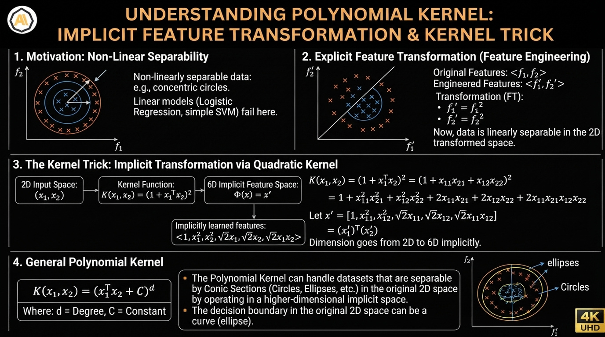
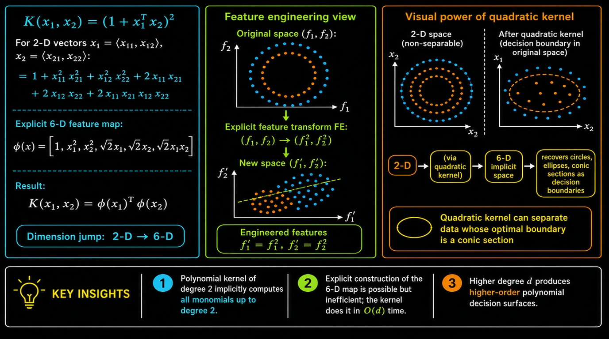
Polynomial Kernel – Detailed Expansion & Geometric Effect
Quadratic Kernel Expansion (again)
$$ K(\mathbf{x}_1,\mathbf{x}_2) = (1 + \mathbf{x}_1^\top\mathbf{x}_2)^2 $$
For 2-D vectors $\mathbf{x}1=\langle x{11},x_{12}\rangle$, $\mathbf{x}2=\langle x{21},x_{22}\rangle$:
$$ \begin{align*} K(\mathbf{x}1,\mathbf{x}2) &= (1 + x{11}x{21} + x_{12}x_{22})^2 \ &= 1 + x_{11}^2 x_{21}^2 + x_{12}^2 x_{22}^2
- 2x_{11}x_{21} + 2x_{12}x_{22} + 2x_{11}x_{21}x_{12}x_{22} \end{align*} $$
This equals the inner product of the explicitly mapped 6-D vectors
$$ \begin{align*} \mathbf{x}1' &= \bigl[1,\ x{11}^2,\ x_{12}^2,\ \sqrt{2},x_{11},\ \sqrt{2},x_{12},\ \sqrt{2},x_{11}x_{12}\bigr] \ \mathbf{x}2' &= \bigl[1,\ x{21}^2,\ x_{22}^2,\ \sqrt{2},x_{21},\ \sqrt{2},x_{22},\ \sqrt{2},x_{21}x_{22}\bigr] \end{align*} $$
i.e. $K(\mathbf{x}_1,\mathbf{x}_2)=(\mathbf{x}_1')^\top(\mathbf{x}_2')$.
Non-linearly Separable Data & Feature Engineering
Classic example: two concentric circles (or ellipses) in 2-D.
- Original features: $\langle f_1,f_2\rangle$
- Data is not linearly separable.
Explicit feature transform (Feature Engineering):
$$ \begin{align*} f_1' &= f_1^2 \ f_2' &= f_2^2 \end{align*} $$
In the new $(f_1',f_2')$ space the two classes become linearly separable.
What the Quadratic Kernel Does
- Starts with 2-D points $\mathbf{x}_1,\mathbf{x}_2$.
- Implicitly maps them to 6-D vectors $\mathbf{x}_1',\mathbf{x}_2'$.
- Finds a linear separator in that 6-D space.
- The decision boundary, when pulled back to the original 2-D plane, becomes a quadratic curve (circle / ellipse / conic section).
Thus a Polynomial Kernel of degree 2 can separate data that lie on concentric circles or ellipses.
Summary Picture
$$ \begin{align*} \text{2-D (non-linear)} &\ \xrightarrow{\text{Quadratic Kernel (implicit FT)}} \ \text{6-D (linearly separable)} \ &\ \xrightarrow{\text{pull back}} \ \text{quadratic decision boundary in 2-D} \end{align*} $$
This is exactly why Kernel SVM succeeds on data sets that Linear SVM and ordinary Logistic Regression fail on.
09. Domain-Specific Kernels
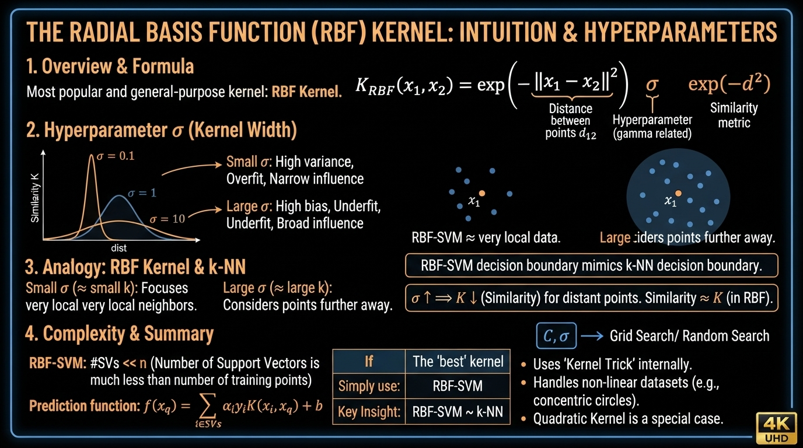
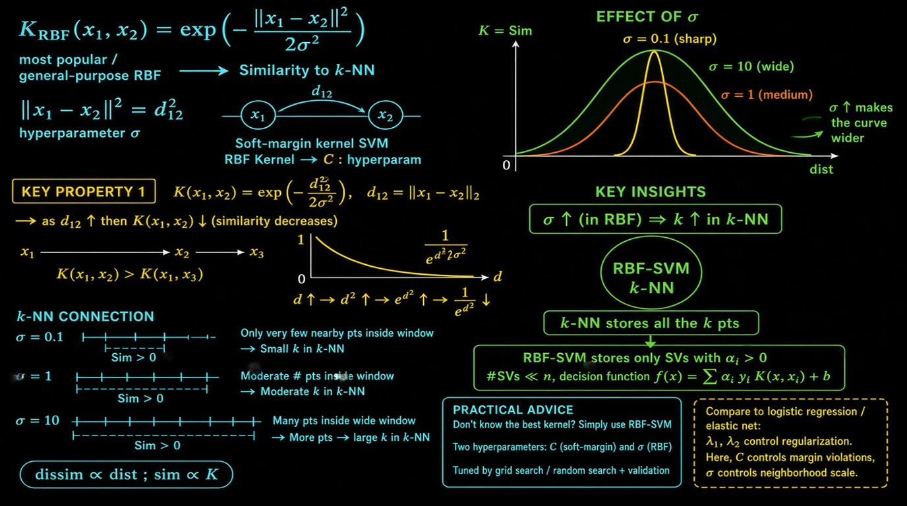
Radial Basis Function (RBF) Kernel
Most Popular / General-Purpose Kernel
For Soft-margin Kernel SVM the most popular and general-purpose kernel is the RBF kernel (also called Gaussian kernel).
$$ K_{\text{RBF}}(\mathbf{x}_1,\mathbf{x}_2) = \exp\left(-\frac{|\mathbf{x}_1-\mathbf{x}_2|^2}{2\sigma^2}\right) $$
- $|\mathbf{x}_1-\mathbf{x}2|^2 = d{12}^2$ (squared Euclidean distance)
- $\sigma > 0$ is a hyper-parameter
RBF kernel measures similarity (exactly as $k$-NN does).
Behaviour with Distance
$$ K(\mathbf{x}_1,\mathbf{x}2) = \exp\left(-\frac{d{12}^2}{2\sigma^2}\right) $$
-
As $d_{12}$ increases, $K(\mathbf{x}_1,\mathbf{x}_2)$ decreases
(similarity falls when points are farther apart).$$ K(\mathbf{x}_1,\mathbf{x}_2) > K(\mathbf{x}1,\mathbf{x}3) \quad\text{when}\quad d{12} < d{13} $$
Effect of the Hyper-parameter $\sigma$
Typical values examined: $\sigma=1$, $\sigma=0.1$, $\sigma=10$.
- Small $\sigma$ (e.g. $0.1$) → very peaked similarity curve → only nearest neighbours have high similarity → behaves like small-$k$ in $k$-NN.
- Large $\sigma$ (e.g. $10$) → wide similarity curve → many points receive non-zero similarity → behaves like large-$k$ in $k$-NN.
RBF-SVM ≈ $k$-NN
- $k$-NN stores all training points and looks at the $k$ nearest ones at test time ($O(nd)$).
-
RBF-SVM keeps only the Support Vectors ($\alpha_i>0$).
Number of SVs $\ll n$.
Decision function still uses only the SVs:
$$ f(\mathbf{x}q) = \sum{i:\alpha_i>0}\alpha_i y_i,K_{\text{RBF}}(\mathbf{x}_i,\mathbf{x}_q)+b $$
Hence RBF-SVM ≈ $k$-NN, but with a much smaller set of prototypes (the Support Vectors).
Practical Advice
When we do not know which kernel is best:
- Simply use RBF-SVM.
- Tune the two hyper-parameters $C$ (soft-margin) and $\sigma$ (RBF width) by grid-search or random-search.
(Compare with Logistic Regression + Elastic-Net which also has two hyper-parameters $\lambda_1,\lambda_2$.)
10. Train and Run Time Complexities
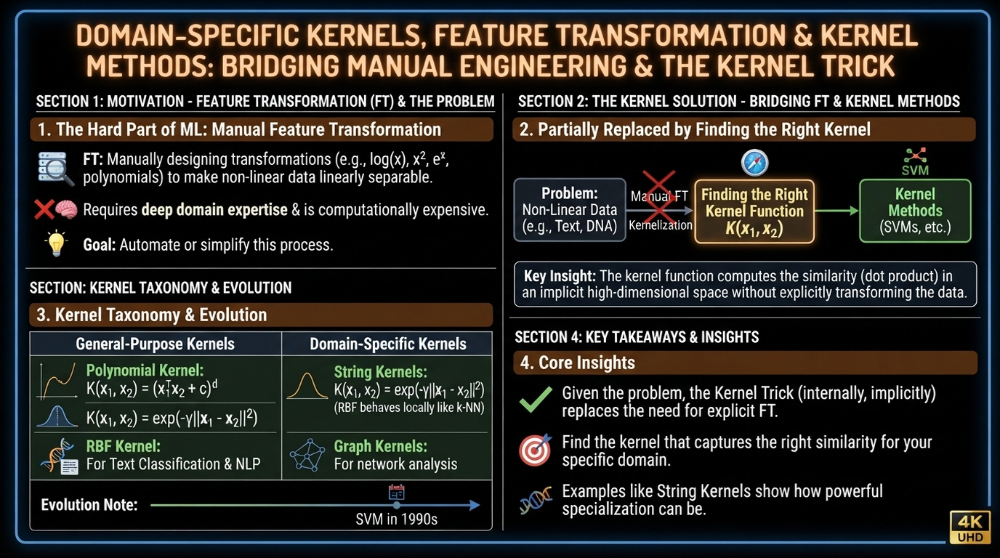
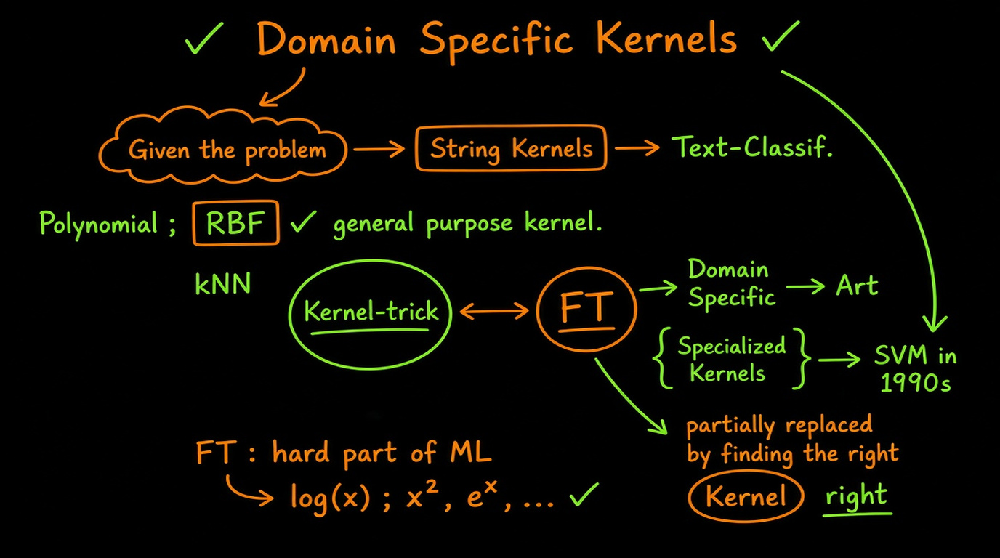
Domain-Specific Kernels
General-Purpose vs Domain-Specific
-
General-purpose kernels
- Polynomial
- RBF (most popular) → behaves like $k$-NN
-
Domain-specific kernels
Designed for a particular type of data / problem.
Kernel-trick ≈ Feature Transform (FT).
When we have a concrete problem we can design a specialised kernel instead of inventing
an explicit feature transform.
Example
String Kernels → used for Text Classification.
Historical Note
SVM became extremely popular in the 1990s precisely because people could invent specialised kernels for many different domains.
Feature Transform vs Kernel
Explicit Feature Transform ($\log(x)$, $x^2$, $e^x$, …) has always been one of the hardest parts of Machine Learning.
Kernel methods partially replace that hard work by the simpler task of
“finding the right kernel”.
11. Nu-SVM: Control Errors and Support Vectors
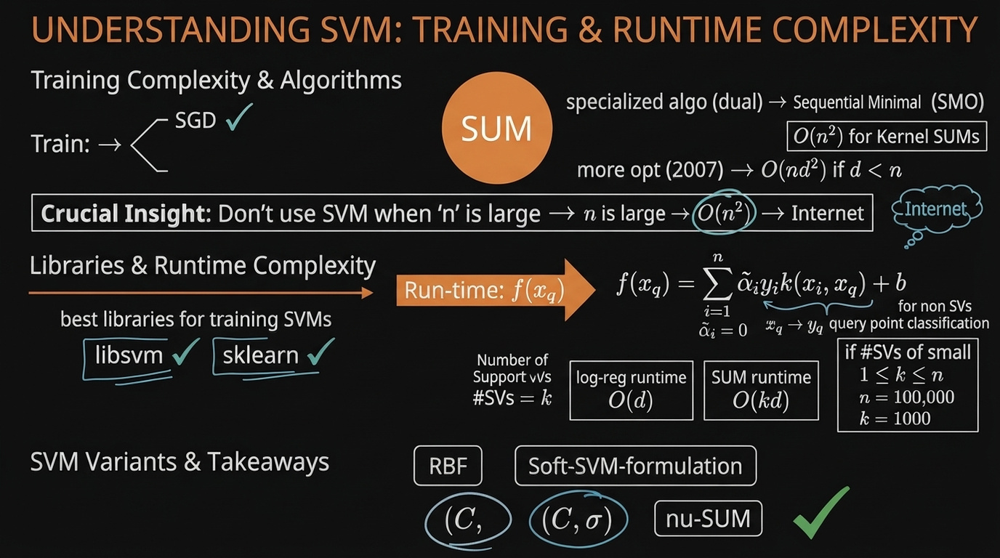
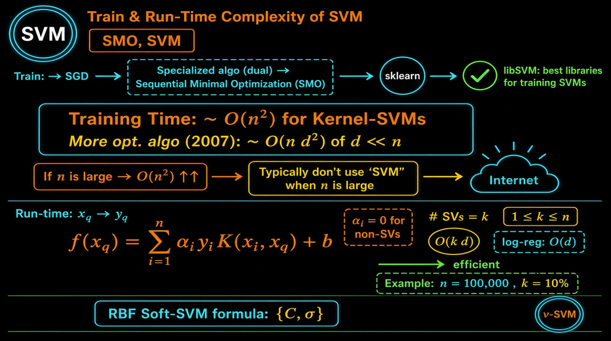
Train & Run-time Complexity of SVM
Training
Two common ways to train an SVM:
- Stochastic Gradient Descent (SGD) on the primal
- Specialised dual algorithms → Sequential Minimal Optimization (SMO)
Best practical libraries:
- libSVM (classic, very solid)
- scikit-learn (uses libSVM / similar solvers under the hood)
Training-time Complexity
- Kernel SVM (with SMO-style solvers): roughly $O(n^2)$
- More optimised algorithms (around 2007): $O(nd^2)$ when $d < n$
Practical rule
If $n$ is very large (Internet-scale data), $O(n^2)$ becomes prohibitive.
→ Typically do not use SVM when $n$ is huge.
Run-time (Prediction) Complexity
Decision function:
$$ f(\mathbf{x}q) = \sum{i=1}^{n}\alpha_i y_i,K(\mathbf{x}_i,\mathbf{x}_q)+b $$
- $\alpha_i=0$ for all non-Support Vectors
- Only the Support Vectors contribute.
Let $K = $ number of Support Vectors ($1\le K\le n$).
Then prediction cost is $O(Kd)$
(compare with Logistic Regression which is always $O(d)$).
When the number of SVs stays small, prediction is fast even if $n$ is large
(e.g. $n=100,000$ but $K=10$).
Soft-margin RBF-SVM Hyper-parameters
The usual practical formulation is Soft-margin RBF-SVM controlled by the pair
$(C,\sigma)$.
(There is also the $\nu$-SVM formulation that directly controls the fraction of Support
Vectors.)
12. SVM Regression
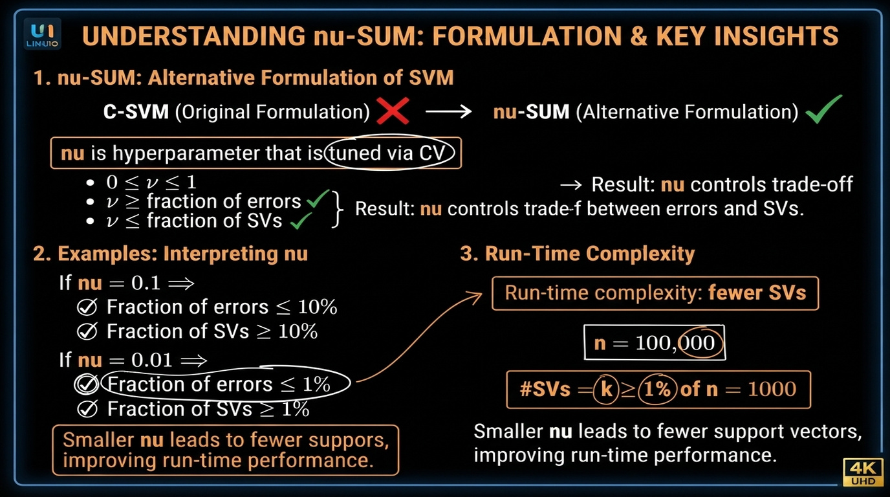
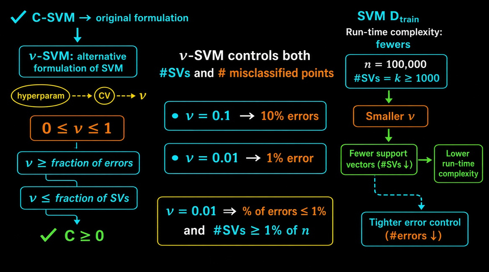
ν-SVM
Two Formulations of Soft-Margin SVM
-
C-SVM (original / classic formulation)
- Hyper-parameter $C \ge 0$
- Controls the trade-off between margin size and number of training errors.
-
ν-SVM (alternative formulation)
- Hyper-parameter $\nu$ with $0\le\nu\le 1$
- Has a more direct interpretation:
$$ \begin{align*} \nu &\ge \text{fraction of training errors} \ \nu &\le \text{fraction of Support Vectors} \end{align*} $$
Practical Meaning of ν
Example:
$$ \nu = 0.01 \quad\Longrightarrow\quad \begin{cases} \text{percentage of errors} &\le 1% \ \text{number of SVs} &\ge 1%\text{ of }n \end{cases} $$
If $n=100,000$ then
$$ K = #\text{SVs} \ge 1,000 $$
Why ν-SVM is Useful
- Gives direct control over the number of Support Vectors (and therefore over run-time complexity).
- Fewer SVs → faster prediction.
- Still needs cross-validation to choose a good value of $\nu$.
(Both C-SVM and ν-SVM are available in standard libraries; C-SVM is more commonly used by default.)
13. Cases
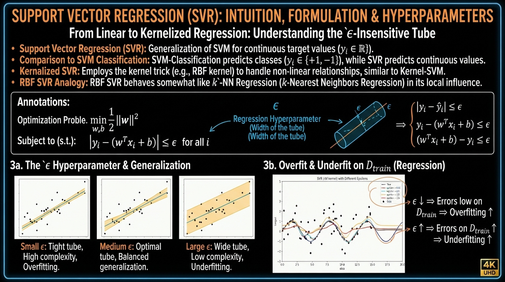
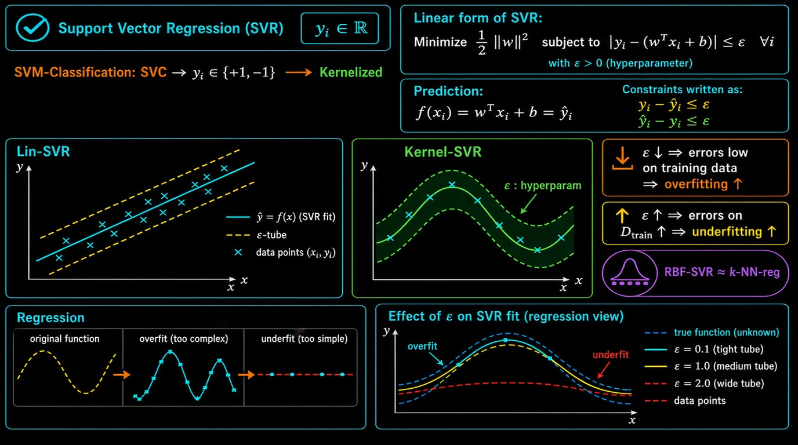
Support Vector Regression (SVR)
From Classification to Regression
- SVM Classification (SVC) → $y_i\in{+1,-1}$
- Support Vector Regression (SVR) → $y_i\in\mathbb{R}$
Both can be kernelized.
Linear Formulation of SVR
$$ \begin{align*} \min_{\mathbf{w},b}\quad &\frac12|\mathbf{w}|^2 \ \text{s.t.}\quad &y_i - (\mathbf{w}^\top\mathbf{x}_i + b) \le\varepsilon \ &(\mathbf{w}^\top\mathbf{x}_i + b) - y_i \le\varepsilon \quad\forall i \end{align*} $$
- $\varepsilon>0$ is a hyper-parameter (the width of the ε-tube).
- Prediction: $\hat{y}_i = f(\mathbf{x}_i) = \mathbf{w}^\top\mathbf{x}_i + b$
- The constraints force $|y_i - \hat{y}_i|\le\varepsilon$.
Geometric Picture
- Linear SVR: finds a linear function that stays inside an ε-tube around the data.
- Kernel SVR: the same idea in a higher-dimensional feature space → non-linear regression curve.
Effect of ε
- $\varepsilon\downarrow$ → errors on training data become smaller → overfitting increases.
- $\varepsilon\uparrow$ → more training points are allowed to lie outside the tube → underfitting increases.
RBF-SVR behaves similarly to $k$-NN regression.
Visual Example (RBF Kernel)
Different values of ε produce different fits:
- Very small ε (e.g. 0.01) → tight fit → overfitting
- Larger ε (e.g. 2.0) → smoother / flatter fit → underfitting
The true underlying function lies between the extreme over-fit and under-fit curves.
14. Code Sample
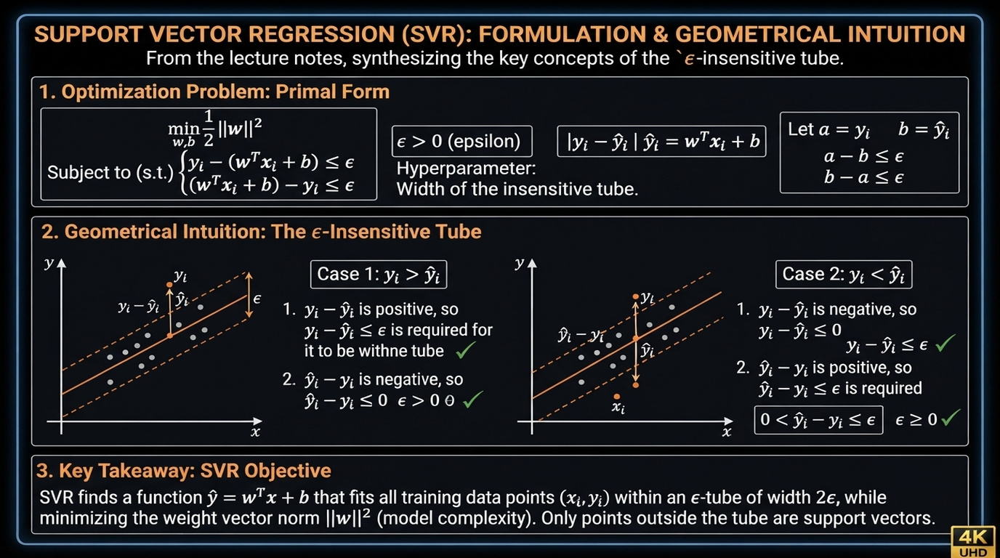
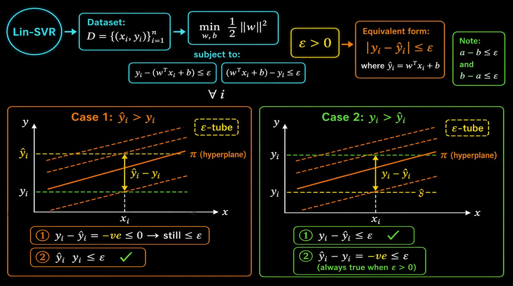
Linear SVR – Optimization Problem & Constraints
Dataset
$$ D = {(\mathbf{x}i,y_i)}{i=1}^{n},\qquad y_i\in\mathbb{R} $$
Optimization Problem (Linear SVR)
$$ \begin{align*} \min_{\mathbf{w},b}\quad &\frac12|\mathbf{w}|^2 \ \text{s.t.}\quad &y_i - (\mathbf{w}^\top\mathbf{x}_i + b) \le\varepsilon \ &(\mathbf{w}^\top\mathbf{x}_i + b) - y_i \le\varepsilon \quad\forall i \end{align*} $$
with hyper-parameter $\varepsilon>0$.
These two inequalities are simply
$$ |y_i - \hat{y}_i| \le\varepsilon $$
where $\hat{y}_i = \mathbf{w}^\top\mathbf{x}_i + b$.
Geometric Meaning of the Constraints
The regression line $\pi$ is surrounded by a tube of width $2\varepsilon$.
Case 1: $\hat{y}_i > y_i$ (prediction above the true value)
$$ \begin{align*} y_i - \hat{y}_i &= -\text{ve} \le 0 \le\varepsilon \ \hat{y}_i - y_i &\le\varepsilon \end{align*} $$
Case 2: $y_i > \hat{y}_i$ (true value above the prediction)
$$ \begin{align*} y_i - \hat{y}_i &\le\varepsilon \ \hat{y}_i - y_i &= -\text{ve} \le 0 \le\varepsilon \end{align*} $$
In both cases the point lies inside (or on the boundary of) the $\varepsilon$-tube.
15. Assignment-7: Apply SVM
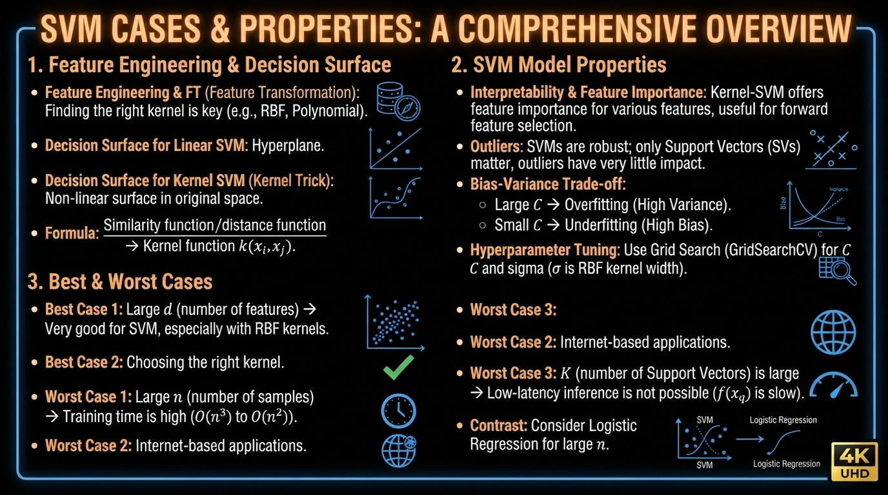
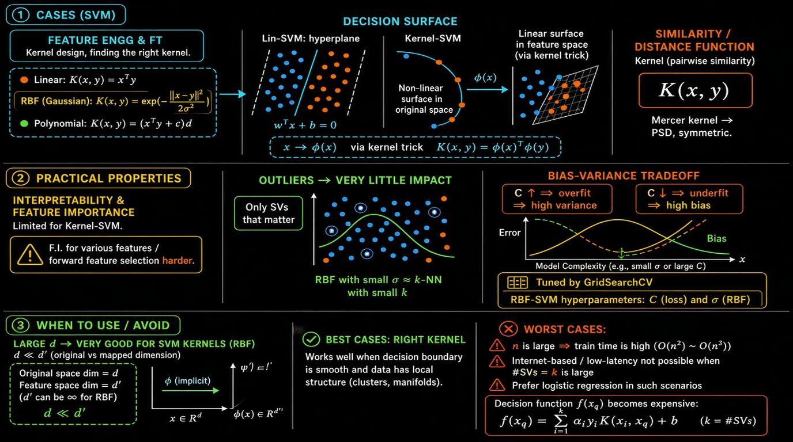
Cases: SVM
Feature Engineering & Feature Transform
Kernel design / finding the right kernel (RBF is the most common general-purpose choice).
Decision Surface
- Linear SVM → hyperplane
-
Kernel SVM → non-linear surface
(original points $\mathbf{x}_i$ are implicitly mapped to $\mathbf{x}_i'$ where a linear surface is found; the kernel trick realises this mapping).
Similarity / Distance Function
Kernel $K(\mathbf{x}_i,\mathbf{x}_j)$ plays the role of a similarity (or inverse-distance) function.
Interpretability & Feature Importance
- Kernel SVM itself is hard to interpret.
- Feature importance for original features can still be estimated (e.g. by forward feature selection).
Outliers
- Very little impact.
- Only the Support Vectors matter.
- RBF with a small $\sigma$ behaves like $k$-NN with a small $k$.
Bias–Variance
- $C\uparrow$ → overfitting → high variance
- $C\downarrow$ → underfitting → high bias
- RBF-SVM hyper-parameters: $C$ (loss) and $\sigma$ (RBF width)
- Tuned by grid-search / cross-validation.
Dimensionality
Large $d$ is very good for SVM (especially with RBF).
Kernel methods map $d\to d'$ with $d'\ge d$.
Best Cases
When we can find the right kernel.
Worst Cases
- $n$ is very large → training time becomes high (Internet-scale data).
- Number of Support Vectors $K$ is large → low-latency prediction is not possible.
- In such situations Logistic Regression is often preferred.
16. Revision Questions
Questions
1. Explain About SVM?
2. What is Hinge Loss?
3. Dual form of SVM formulation?
4. What is Kernel trick?
5. What is Polynomial kernel?
6. What is RBF-Kernel?
7. Explain about Domain specific Kernels?
8. Find Train and run time complexities for SVM?
9. Explain about SVM Regression?
1. Explain About SVM?
Support Vector Machine (SVM) is a powerful supervised learning algorithm mainly used for classification (and also regression).
Geometric Intuition:
- SVM finds the optimal hyperplane that best separates the two classes.
- It maximizes the margin (distance between the hyperplane and the nearest points from each class).
- The nearest points are called Support Vectors.
Key ideas:
- Hard-margin SVM → data is perfectly linearly separable
- Soft-margin SVM → allows some misclassifications using a slack variable (more practical)
- Can handle non-linear data using the Kernel Trick
SVM is both a geometric method (maximum margin hyperplane) and can be viewed through a loss-function lens (Hinge Loss).
2. What is Hinge Loss?
Hinge Loss is the loss function used by Support Vector Machines.
For a single point with label $ y_i \in {-1, +1} $:
$ L = \max\big(0,\ 1 - y_i (w^T x_i + b)\big) $
Interpretation:
- If the point is correctly classified and lies outside the margin → loss = 0
- If the point is inside the margin or misclassified → loss increases linearly
Why it is used:
- Encourages a large margin
- Only support vectors (and misclassified points) contribute to the loss
- Convex and suitable for optimization
The overall SVM objective becomes:
$ \min*{w,b} \frac{1}{2}|w|^2 + C \sum*{i=1}^{n} \max\big(0,\ 1 - y_i (w^T x_i + b)\big) $
3. Dual form of SVM formulation?
The Primal form of hard-margin SVM is:
$ \min_{w,b} \frac{1}{2}|w|^2 $
subject to $ y_i (w^T x_i + b) \geq 1 $ for all $ i $
Using Lagrange multipliers $ \alpha_i \geq 0 $, we get the Dual form:
$ \max*{\alpha} \sum*{i=1}^{n} \alphai - \frac{1}{2} \sum{i=1}^{n} \sum_{j=1}^{n} \alpha_i \alpha_j y_i y_j (x_i^T x_j) $
subject to $ \alpha_i \geq 0 $ and $ \sum \alpha_i y_i = 0 $
Advantages of Dual form:
- Depends only on the inner product $ x_i^T x_j $
- Enables the Kernel Trick
- Only support vectors have $ \alpha_i > 0 $
4. What is Kernel trick?
The Kernel Trick allows SVM to work in a high-dimensional feature space without explicitly computing the transformation.
Instead of mapping data to a higher dimension using $ \phi(x) $ and then computing $ \phi(x_i)^T \phi(x_j) $, we directly replace the inner product with a kernel function:
$ K(x_i, x_j) = \phi(x_i)^T \phi(x_j) $
Benefits:
- Can handle non-linearly separable data
- Computationally efficient (never computes $ \phi(x) $ explicitly)
- Works with the dual formulation of SVM
Common kernels: Linear, Polynomial, RBF (Gaussian), Sigmoid, etc.
5. What is Polynomial kernel?
The Polynomial Kernel is defined as:
$ K(x_i, x_j) = (x_i^T x_j + c)^d $
where:
- $ d $ = degree of the polynomial
- $ c $ = constant (usually 1)
Properties:
- Maps data into a higher-dimensional space of polynomial features
- Can model polynomial decision boundaries
- When $ d = 1 $, it reduces to the linear kernel
Useful when the relationship between features is polynomial in nature.
6. What is RBF-Kernel?
The RBF (Radial Basis Function) Kernel, also called Gaussian Kernel, is:
$ K(x_i, x_j) = \exp\big(-\gamma |x_i - x_j|^2\big) $
where $ \gamma > 0 $ controls the width of the Gaussian.
Properties:
- Most popular and widely used kernel
- Can create highly flexible, non-linear decision boundaries
- Corresponds to an infinite-dimensional feature space
-
$ \gamma $ is an important hyperparameter:
- Large $ \gamma $ → more complex boundary (risk of overfitting)
- Small $ \gamma $ → smoother boundary (risk of underfitting)
7. Explain about Domain specific Kernels?
Domain-specific kernels are specially designed kernel functions that incorporate prior knowledge of a particular domain.
Examples:
- String kernels → for text and DNA sequences
- Graph kernels → for molecules and social networks
- Tree kernels → for parse trees in NLP
- Histogram intersection kernel → for computer vision
Why they are useful:
- Capture the natural similarity measure of the domain
- Often perform better than generic kernels (Polynomial / RBF) when domain knowledge is strong
- Still allow the use of the Kernel Trick inside SVM
8. Find Train and run time complexities for SVM?
Training Time Complexity:
- Standard quadratic programming solvers: $ O(n^3) $ in the worst case
- With efficient implementations (SMO, LibSVM, etc.): roughly $ O(n^2) $ to $ O(n^3) $ depending on the number of support vectors and data
- Linear SVM (using SGD or LibLinear): can be much faster — approximately $ O(n \cdot d) $
Prediction (Run-time) Complexity:
- $ O(s \cdot d) $ where $ s $ = number of support vectors
- In the worst case $ s $ can be close to $ n $, so prediction can be slow compared to Logistic Regression
Space Complexity:
- Need to store the support vectors → $ O(s \cdot d) $
SVM training is generally more expensive than Logistic Regression, especially on large datasets.
9. Explain about SVM Regression?
Support Vector Regression (SVR) is the regression counterpart of SVM.
Key idea:
- Instead of maximizing the margin between classes, SVR tries to fit a function within a tube of width $ 2\varepsilon $ (epsilon-insensitive tube).
- Errors inside the tube are ignored (loss = 0).
- Only points outside the tube contribute to the loss.
Loss function (Epsilon-insensitive loss):
$ L = \max\big(0,\ |y_i - (w^T x_i + b)| - \varepsilon\big) $
Objective:
$ \min*{w,b} \frac{1}{2}|w|^2 + C \sum*{i=1}^{n} L_{\varepsilon}(y_i, w^T x_i + b) $
Advantages:
- Robust to outliers (only points outside the tube matter)
- Can use kernels for non-linear regression
- Controls model complexity via $ C $ and $ \varepsilon $